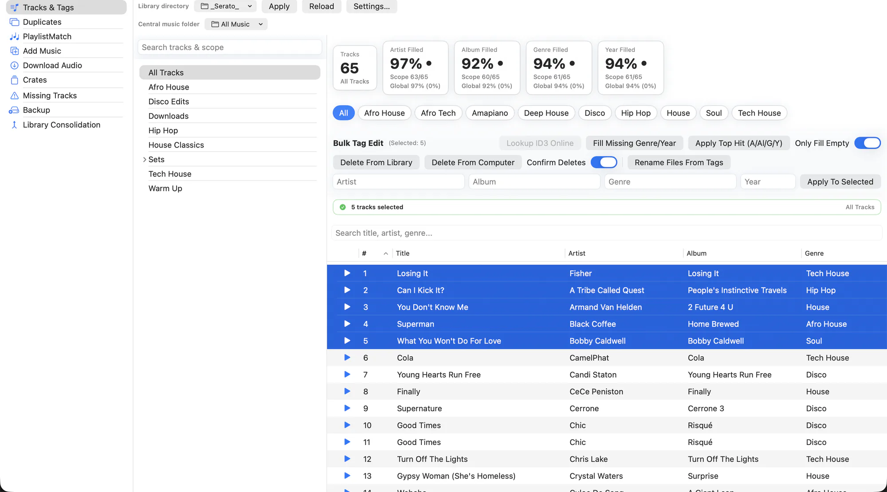

Tracks & Tags is where most sessions start. It is one table over your entire Serato library — or over a single crate — with every editing tool applied to whatever you have selected.
The completion stats across the top are the fastest way in. They show what percentage of the current scope has an artist, album, genre and year, and clicking one filters the table down to exactly the tracks that are missing it.

What it does
- Search, sort and scope. Filter by text, sort by any column, and switch between your whole library and a single crate without leaving the view.
- Click a stat to filter. Genre Filled 78% is also a button — click it and you are looking at the other 22%. Click again to clear.
- Bulk fill. Set artist, album, genre or year across every selected track at once. Only Fill Empty protects values that are already there.
- Online lookup. Pull correct metadata and cover art from iTunes, MusicBrainz and Discogs, with fingerprint-assisted suggestions when the tags are too sparse to search on.
- DJ-safe titles. Version markers like (Intro), (Clean) and (Extended Mix) are preserved when an online title is applied, instead of being flattened to the radio edit.
- Listen before you commit. The built-in player has full transport controls and follows the order of the list you are looking at, filters and sort included.
- Copy anything. Every value in the app is selectable text, so you can lift an ISRC or a path straight out of the window.
- Clean Tag Whitespace. Sweeps the current scope for tag values padded with stray spaces — invisible in the field, but enough to make
"Drake "and"Drake"two different artists — and re-saves them trimmed. - Edit Audio. Opens the selected track in the trim editor to cut dead air or an unwanted intro without leaving the table.
How to use it
-
Pick your scope
Choose All Tracks or a specific crate at the top of the view.
-
Find what is broken
Click a completion stat to filter to the tracks missing that field, or search for the mess you already know about.
-
Select and edit
Select the rows you want. Use bulk fill for values you know, or online lookup to fetch them.
-
Apply
Changes are written to the audio files and to Serato together, with a backup taken first. Serato has to be closed.
Serato rewrites its library from memory when it quits, so it would overwrite anything changed underneath it. EZLibrary refuses to write while Serato is running rather than let that happen.
Related
Audio Editor
Trim dead air, long intros and unwanted tails off a track — without re-encoding it.
Rename From Tags
Consistent filenames across your whole library — and Serato still finds every one of them.
Find Duplicates
Catch the same song saved five times, even when every copy is named differently.
Try it on your own library
Free and open source. Takes a backup before it touches anything.